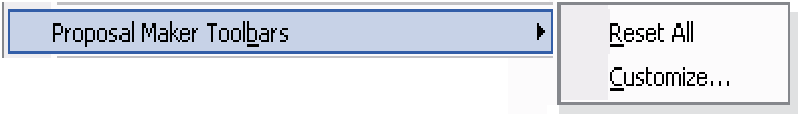
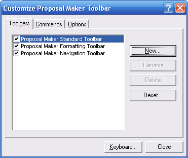
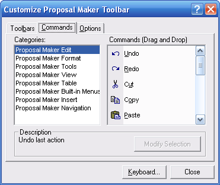
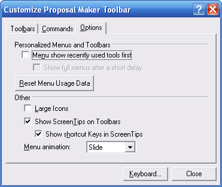

|
Proposal Maker Toolbars (Proposal Maker Tools Menu) Proposal Maker Main Topics (List) Proposal Maker Menus (List) |
  
|
Proposal Maker Toolbars (Proposal Maker Tools Menu)
Proposal Maker Main Topics (List) Proposal Maker Menus (List)
|
Proposal Maker Toolbars (Proposal Maker Tools Menu) Proposal Maker Main Topics (List) Proposal Maker Menus (List) |
|
Icon: None, Keyboard shortcut: Alt, M, B
Displays the following sub-menu, which lets you reset the toolbars to their original state or open the Customize Proposal Maker Toolbar dialog.

Reset All: Eliminates any customizations you may have made to the Proposal Maker's toolbars and resets all the toolbars and tools to their original states.
Customize: Opens the Customize Proposal Maker Toolbar dialog, shown below, which gives you several customization options for the Proposal Maker toolbars. While the Customize Toolbar dialog is open, you can rearrange existing tools on the toolbars, as well as add new tools or remove ones you do not use very often.
Important Note About Customizing Toolbars: The Proposal Maker toolbars are independent from the main program toolbars and menu. If you want to customize the main program menu or the toolbars for the main window (including the Proposal Maker menu items of Edit, View, Insert, Format, Table, and Proposal Maker Tools), right click on the main program toolbar and click "Customize Main Window's Toolbar." That will open a separate Customize Main Window Toolbar dialog that works the same as the one described in this topic, but is independent from it.

List of Toolbars: Shows you the currently defined toolbars and lets you uncheck any that you want to be invisible.
New Button: Opens the New Toolbar dialog, which lets you enter a name for a new toolbar that you can drag and drop tools onto.
Rename: Lets you rename any of the custom toolbars you may have created with the New button.
Delete: Lets you delete any of the custom toolbars you may have created with the New button.
Reset: Resets the toolbar whose name is currently highlighted in the list of toolbars on the left of this dialog.
Keyboard: Opens the Customize Keyboard dialog, which lets you assign or reassign shortcut keys to the Proposal Maker toolbar buttons.

Categories List: Shows all the available categories of tools contained in the Proposal Maker toolbars. Click to highlight the category you want to view the list of tools for.
Commands (Drag and Drop): Shows all of the tools available in the currently selected category. Drag and drop tools from this list onto the toolbars to make them available. For example, if you want to add the Double Underline tool to one of the toolbars, click "Proposal Maker Format" in the Categories list, then scroll the Commands list until you see the Double Underline tool. Then drag that tool onto the toolbar and drop it where you want it to go.

Personalized Menus and Toolbars: The features associated with these controls are currently not implemented in Proposal Maker or its host programs, so checking these boxes has no effect.
Large Icons: Makes the icons display in 32 x 32 pixel format instead of 16 x 16 pixels.
Show ScreenTips on Toolbars: Makes the tooltip for each tool display when you let the mousepointer hover above the tool for a second or two.
Show shortcut Keys in ScreenTips: Includes shortcut keys (such as Ctrl+X for the Cut tool) in the tooltip for each tool when there is a shortcut key assigned.
Menu animation: Determines the way in which menus are displayed when you click on the main menu. For the Proposal Maker toolbars, these options have no effect since the main window is where the program menu is located. To set this option for the main window's menu, use the Customize Main Window Toolbar dialog, described earlier in this topic.